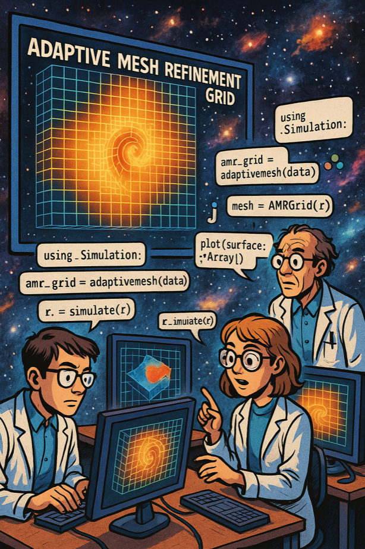

Notifications System

MERA.jl's notification system enables seamless team collaboration and progress sharing across distributed astrophysics research workflows
Stay connected to your research computations anywhere, anytime.
The MERA notifications system transforms how you monitor long-running simulations, coordinate with research teams, and track computational workflows. Whether you're analyzing galaxy formation over hours or running parameter sweeps overnight, stay informed with intelligent notifications that understand your research needs.
Key Features
📧 Smart Email Integration - Simple setup with system mail integration 💬 Advanced Zulip Support - Rich team messaging with organized conversations 📎 File Attachments - Automatic plot sharing, data files, and results ⏱️ Execution Tracking - Built-in timing with progress monitoring 🚨 Exception Handling - Intelligent error reporting with stack traces 🖥️ Cross-Platform - Full support for macOS, Linux, and Windows (Windows support not tested) 🔬 Research-Optimized - Designed for scientific computing workflows
Quick Start
⚠️ Setup Required First: Notifications require configuration files in your home directory:
~/email.txt- For email notifications~/zulip.txt- For Zulip team messaging- No config = No notifications sent (silent)
# Setup email notifications (run once)
# Create ~/email.txt with your email address
open(homedir() * "/email.txt", "w") do f
write(f, "your.email@example.com")
end
# Basic notification (email if configured, silent otherwise)
notifyme("Analysis complete!")
# Audio notification (always works, no setup needed)
bell() # Plays local sound
# After Zulip setup: Share results with team
notifyme("Temperature study finished!",
zulip_channel="research",
image_path="temperature_plot.png")
# Monitor long computations with timing
start_time = time()
# ... heavy computation ...
notifyme("Simulation done!", start_time=start_time)What gets sent:
- ✅ Email only: If only
~/email.txtexists - ✅ Zulip only: If only
~/zulip.txtexists - ✅ Both email AND Zulip: If both config files exist (sends to ALL configured methods)
- ❌ Nothing: If no config files (function runs silently)
📝 Note: notifyme() always sends to ALL configured notification methods. There's no way to choose email OR Zulip for individual notifications - it sends to both if both are set up.
Core Functions
Primary Functions
notifyme()- Main notification function with extensive featuressend_results()- Convenient function for sharing multiple filesbell()- Simple audio notification
Timing & Progress
timed_notify()- Automatic execution timing with notificationscreate_progress_tracker()- Progress monitoring for long tasksupdate_progress!()- Update progress with smart notificationscomplete_progress!()- Final completion notifications
Error Handling
safe_execute()- Exception handling with automatic error reports
System Information
get_system_info_command()- Cross-platform system monitoringget_memory_info_command()- Memory usage monitoringget_disk_info_command()- Disk usage monitoringget_network_info_command()- Network configuration monitoringget_process_info_command()- Process information monitoring
Documentation Guide
For New Users
- Quick Start Guide - Get notifications working in 5 minutes
- Setup & Configuration - Complete setup instructions
- File Attachments - Share plots and results automatically
For Team Collaboration
- Zulip Integration - Advanced team messaging setup
- Zulip Templates & Examples - Ready-to-use notification patterns
- Output Capture - Capture and share command/function output
Advanced Usage
- Advanced Features - Progress tracking, exception handling, timing
- Examples & Use Cases - Real-world research workflow examples
- Troubleshooting - Common issues and solutions
Research Use Cases
Galaxy Analysis Workflows - Track multi-hour simulations with automatic plot sharing Parameter Studies - Monitor sweeps with progress updates and result compilation Data Pipeline Monitoring - Get notified of pipeline failures with diagnostic info Team Coordination - Share results instantly with organized team channels Cross-Platform Computing - Unified notifications across different systems
Why Use MERA Notifications?
Traditional Approach
# Manual checking every few hours
run_simulation() # Hope it doesn't crash overnightMERA Approach
# Intelligent monitoring
timed_notify("Galaxy formation simulation") do
run_simulation()
end
# ✅ Get success notification with timing
# ❌ Get error notification with diagnostics
# 📊 Get progress updates automaticallyReady to Start?
Choose your path:
- New to notifications? 👉 Start with Quick Start Guide
- Setting up a team? 👥 Jump to Zulip Integration
- Need examples? 📚 Check Use Cases
- Having issues? 🔧 Visit Troubleshooting